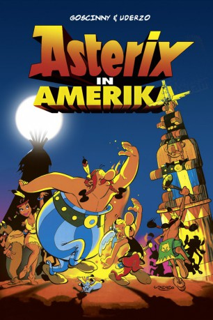

#2994 Asterix in Amerika (Schwörerdeutsch)
Alternativ: Asterix Conquers America (Englischer Titel)
 
 IMDB-Wertung: 5.9 / 10
IMDB-Wertung: 5.9 / 10  Metascore: 0
Metascore: 0 
Da die Gallier ohne ihren Zaubertrank keine Chance gegen die Römer haben, läßt Cäsar den Druiden Miraculix entführen und über den Rand der Erdscheibe schießen. Die Erde ist aber nun mal keine Scheibe. Und so landet er, ziemlich unsanft aber wohlbehalten, in Amerika. Asterix und Obelix sind den Römern hart auf den Fersen. Aber ehe sie ihren Freund wieder nach Hause bringen können, müssen sie noch viele Abenteuer gegen wilde Büffel, einen bösen Medizinmann, Marterpfähle und scharfe Tomahawks bestehen.
Jahr: 1994
Dauer: 80 Minuten
FSK: 0
Land: Deutschland Studio: Jugendfilm-VerleihTonspuren:
Untertitel:
Auflösung: SD (720x378) Größe: 993 MB
Genre: Komödie, Abenteuer, Animation/Trick, Familie
Regisseur: Gerhard Hahn
Drehbuch: René Goscinny, Albert Uderzo, Albert Uderzo, Pierre Tchernia, Thomas Platt
Soundtrack: Harold Faltermeyer
Darsteller:
Datei: X:\Kinder Collections\Asterix Mundart\Asterix in Amerika (Schwörerdeutsch) (1994, FSK0, 720x378).mkv seit 14.01.2016
Festplatte: Kinder-Filme+Trick
 Es gibt insgesamt 10 Filme in der Gruppe 'Kinder Collections\Asterix Mundart'
Es gibt insgesamt 10 Filme in der Gruppe 'Kinder Collections\Asterix Mundart'